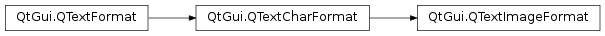

QTextImageFormat¶
Synopsis¶
Detailed Description¶
The
PySide2.QtGui.QTextImageFormatclass provides formatting information for images in aPySide2.QtGui.QTextDocument.Inline images are represented by a Unicode value U+FFFC (OBJECT REPLACEMENT CHARACTER) which has an associated
PySide2.QtGui.QTextImageFormat. The image format specifies a name withPySide2.QtGui.QTextImageFormat.setName()that is used to locate the image. The size of the rectangle that the image will occupy is specified usingPySide2.QtGui.QTextImageFormat.setWidth()andPySide2.QtGui.QTextImageFormat.setHeight().Images can be supplied in any format for which Qt has an image reader, so SVG drawings can be included alongside PNG, TIFF and other bitmap formats.
-
class
PySide2.QtGui.QTextImageFormat¶ -
class
PySide2.QtGui.QTextImageFormat(format) -
class
PySide2.QtGui.QTextImageFormat(QTextImageFormat) Parameters: - format –
PySide2.QtGui.QTextFormat - QTextImageFormat –
PySide2.QtGui.QTextImageFormat
Creates a new image format object.
Creates a new image format with the same attributes as the
giventext format.- format –
-
PySide2.QtGui.QTextImageFormat.height()¶ Return type: PySide2.QtCore.qrealReturns the height of the rectangle occupied by the image.
-
PySide2.QtGui.QTextImageFormat.name()¶ Return type: unicode Returns the name of the image. The name refers to an entry in the application’s resources file.
-
PySide2.QtGui.QTextImageFormat.setHeight(height)¶ Parameters: height – PySide2.QtCore.qrealSets the
heightof the rectangle occupied by the image.
-
PySide2.QtGui.QTextImageFormat.setName(name)¶ Parameters: name – unicode Sets the
nameof the image. Thenameis used to locate the image in the application’s resources.
-
PySide2.QtGui.QTextImageFormat.setWidth(width)¶ Parameters: width – PySide2.QtCore.qrealSets the
widthof the rectangle occupied by the image.
-
PySide2.QtGui.QTextImageFormat.width()¶ Return type: PySide2.QtCore.qrealReturns the width of the rectangle occupied by the image.
© 2018 The Qt Company Ltd. Documentation contributions included herein are the copyrights of their respective owners. The documentation provided herein is licensed under the terms of the GNU Free Documentation License version 1.3 as published by the Free Software Foundation. Qt and respective logos are trademarks of The Qt Company Ltd. in Finland and/or other countries worldwide. All other trademarks are property of their respective owners.